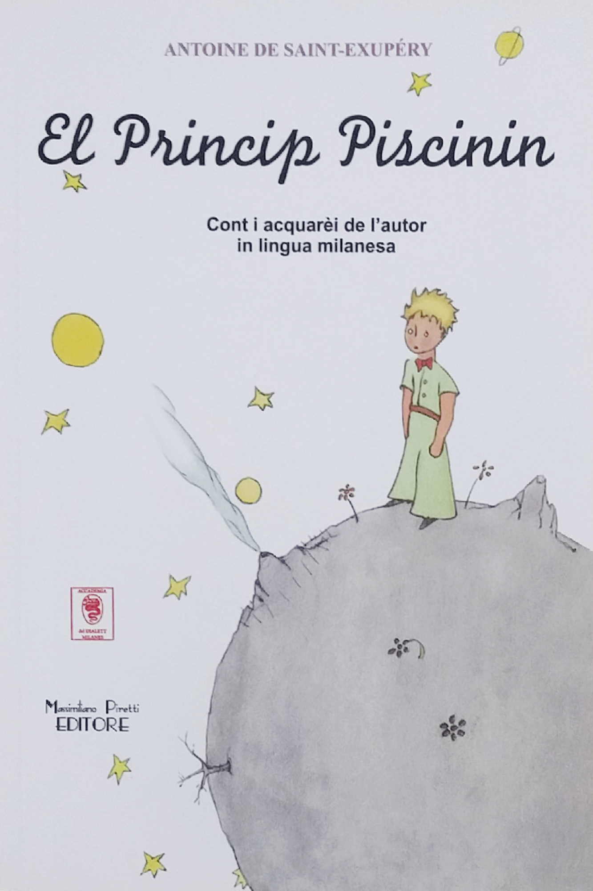

.jpg)


| Jezik | Language | Title | Image | |
|---|---|---|---|---|
| Srpski | Serbian | Mali princ | |
|
| Srpski ćirilica | Serbian cyrilic | Мали принц | ||
| Srpski ćirilica | Serbian cyrilic | Мали принц | ||
| Srpski ćirilica | Serbian cyrilic | Мали принц | |
|
| Arapski jezik | Arabic language | شازده کوچولو | |
|
| Baškirski jezik | Bashkir language | Бәләкәй шаһзат | ||
| Bosanski jezik | Bosnian language | Mali princ | |
|
| Bugarski jezik | Bulgarian language | Малкия принц | |
|
| Bugarski jezik | Bulgarian language | Малкия принц | ||
| Engleski jezik | English language | The Little prince | ||
| Esperanto | Esperanto | La Eta Princo | ||
| Francuski jezik | French language | Le Petit prince | ||
| Filipinski (Tagalog) jezik | Filipino (Tagalog) language | Ang Munting Prinsipe | |
|
| Filipinski (Bikol) jezik | Filipino (Bikol) Language | An Sadit na Prinsipe | |
|
| Grčki jezik | Greek language | Ο μικρός πρίγκιπας | |
|
| Starogrčki jezik | Ancient Greek language | Τὸ βασιλείδιον | |
|
| Hebrejski jezik | Hebrew language | הנסיך הקטן | ||
| Hindi jezik | Hindi language | छोटा राजकुमार | |
|
| Holandski jezik | Dutch language | |
||
| Italijanski jezik | Italian language | |
||
| Italijanski, Milanski dijalekt | Italian, Milanese dialect |  | ||
| Moliški dijalekt | Molise dialect | |
||
| Kazaški jezik | Kazakh language | |
||
| Kineski jezik | Chinese language | 小王子 | |
|
| Kurdski jezik | Kurdish language | Mirzaye Piçük | |
|
| Latinski jezik | Latin language | Principulus | |